Overview
===========
* This lab exercise demonstrates the ability of IWR6843 TI-mmWave sensor to measure body displacements due to breathing and heart beat.
* Typical body surface displacement parameters due to breathing and hear-beat are
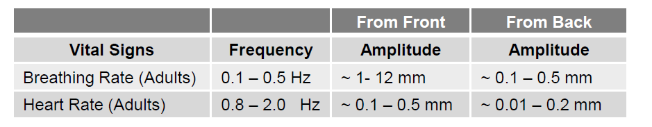
* To measure these small scale vibrations/displacements, we measure the change in phase of the FMCW signal with time at the target range bin
* Code Composer Studio (CCS) project along with source code is provided for this lab
* Pre-built binary files are also provided that can be loaded on to the IWR6843 EVM
Theory
===========
### FMCW Basics
* Periodic linearly-increasing frequency chirps (known as Frequency-Modulated Continuous Wave (FMCW))
are transmitted by radar towards the object
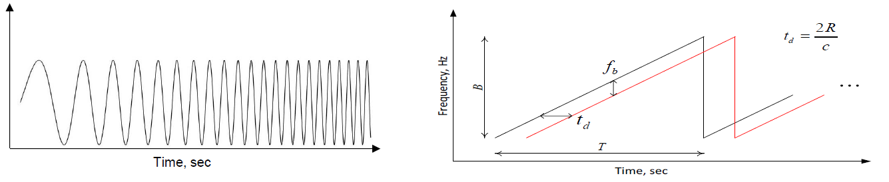
* Transmitted FMCW signal is given by
* Signal at the receiver is a delayed version of the transmitted signal
* The received signal from an object at range R after mixing and filtering is given by
### FMCW Radar - Vital Signs Measurements
* Note that for a single object, the beat signal *b(t)* is a sinusoidal and has both frequency fb and phase
* To measure small scale vibrations, we measure the change in phase of the FMCW signal with time at the object range bin. If an object moves a distance ΔR then the change in phase between consecutive measurements is given by
* Phase can be measured by taking the FFT of the beat signal b(t) and computing the phase at the object range-bin.
* Suppose we take the FFT and the object is at range-bin m, then the vibration signal x(t) can be extracted by measuring the phase at range-bin m at time indices nTs , where n is the chirp index and Ts is the time between consecutive measurements
### Chirp Configuration for Demo
* 100 ADC Samples per chirp. Chirp duration is 50 ms based on the IF sampling rate of 2 MHz
* Each frame is configured to have 2 chirps. However only the 1st Chirp in the frame is used for processing
* A single TX-RX antenna pair is currently used for processing (Although all the RX antennas are enabled)
* Vital signs waveform is sampled along the “slow time axis” hence the vital signs sampling rate is equal to the Frame-rate of system
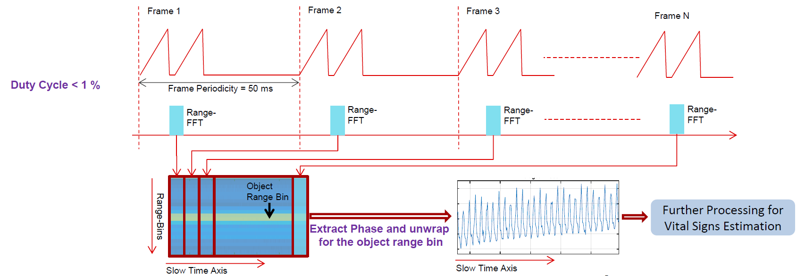
Quickstart
===========
The quickstart uses:
* Precompiled binaries for flashing the device using Uniflash.
* Visualizer as .exe
1. Hardware and Software Requirements
-----------
### Hardware
Item | Details
--------------------------|-----------------
Device | [Industrial mmWave Carrier Board](http://www.ti.com/tool/MMWAVEICBOOST) and [IWR6843 ES1.0 Long Range Antenna Board](http://www.ti.com/tool/IWR6843ISK). These two boards combined are referred to as the [Industrial mmWave Starter Kit](http://www.ti.com/tool/IWR6843-STARTER-BDL)
Computer | PC with Windows 7 or 10. If a laptop is used, please use the 'High Performance' power plan in Windows.
Micro USB Cable |
Power Supply | 5V, >2.5A with 2.1-mm barrel jack (center positive). The power supply can be wall adapter style or a battery pack with a USB to barrel jack cable.
### Software
Tool | Version | Required For |Download Link|
----------------------------|---------------------------|---------------|-------------|
mmWave Industrial Toolbox | Latest | Contains all lab material. | [mmWave Industrial Toolbox](http://dev.ti.com/tirex/#/?link=Software%2FmmWave%20Sensors%2FIndustrial%20Toolbox)
TI mmWave SDK | 3.1.1.2 | Compile Vital Signs demo | [TI mmWave SDK](http://www.ti.com/tool/MMWAVE-SDK) and all the related tools are required to be installed.
2. Physical Setup
-----------
1. Setup the Carrier Board in standalone mode using the S1 switch combination as shown below.
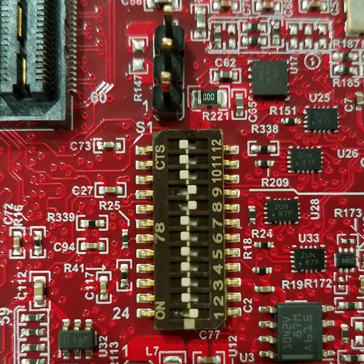 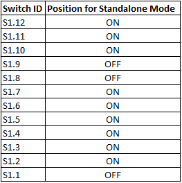
2. Connect the IWR6843ISK to the MMWAVEICBOOST board and mount the EVM vertically as shown below:
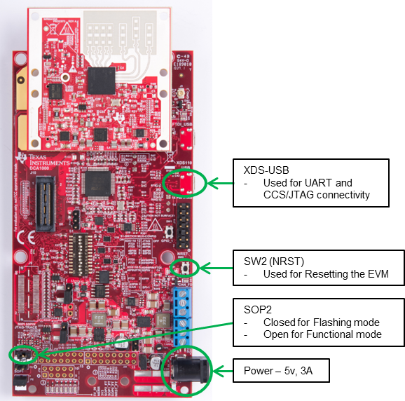
3. Plug in micro-usb and power supply to EVM using the connectors shown above.
<a name="flash_the_evm"></a>
3. Flash the EVM
-----------
* Power on the EVM using a 5V/3A power supply.
* Flash the following image using **Uniflash**
Image | Location
--------------------------|------------
Meta Image 1/RadarSS | `C:\ti\<mmwave_industrial_toolbox_install_dir>\labs\lab0026_vital_signs_68xx\prebuilt_binaries\vital_signs_demo_68xx.bin`
[[+d Expand for help using Uniflash
* Connect the EVM to your PC and check the COM ports in **Windows Device Manager**
* The EVM exports two virtual COM ports as shown below:
* XDS110 Class Application/User UART (COM UART): Used for passing configuration data and firmware to the EVM
* XDS110 Class Auxiliary Data Port (COM AUX): Used to send processed radar data output
<img src="images/common/com_port.png" width="300"/>
{{b Note the COM UART and COM AUX port numbers, as they will be used later for flashing and running the lab.}}
* Put the EVM in flashing mode by connecting jumpers on **SOP0** and **SOP2** as shown in the image. Then power cycle the EVM with **SW2** (NRST).
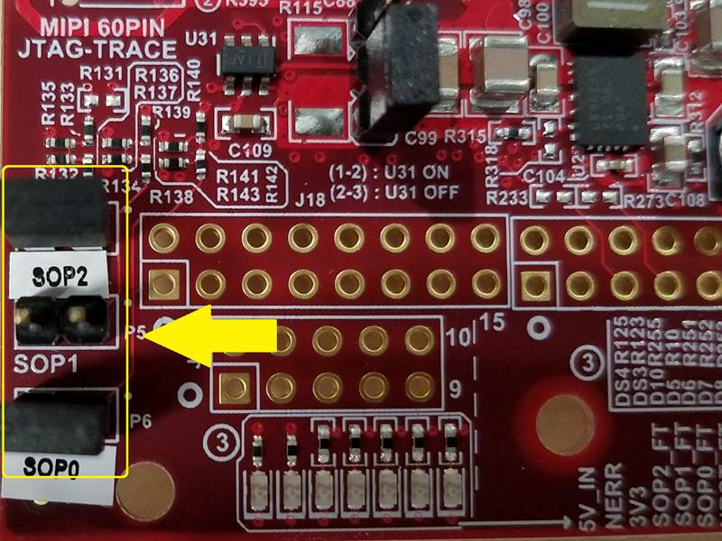 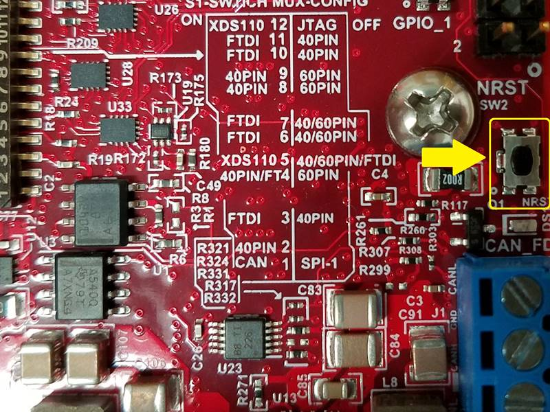
* Open the **UniFlash tool** ([Download offline tool](http://www.ti.com/tool/UNIFLASH) or use the [Cloud version](https://dev.ti.com/uniflash/#!/) )
* In the New Configuration section, locate and select the appropriate device (IWR6843 ES1.0)
* Click Start to proceed
* Click the **Settings & Utilities** tab. Under setup, fill the **COM Port** text box with the Application/User UART COM port number (COM UART) noted earlier.
* In the **Program** tab, browse and locate the images (.bin file) as specified in the lab directions.
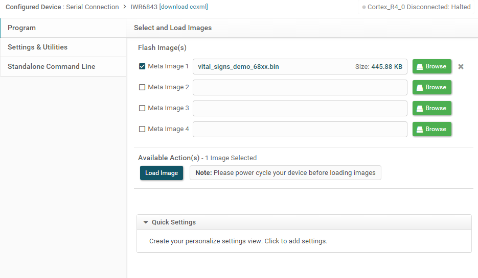
* **Power cycle** the device and click on **Load Images**
[[g! Successful Flash Procedure
UniFlash’s console should indicate: [SUCCESS] Program Load completed successfully
]]
* Power off the board and **remove only SOP2 jumper**
[[y SOP2 Removed?
Ensure that the jumper has been removed and the EVM power cycled. This puts the board back in functional mode.
]]
+]]
4. Run the Lab
-----------
To run the lab, launch and configure the visualizer which displays the detection and tracked object data received via UART.
### Launch the visualizer:
* Navigate to folder `C:\ti\<mmwave_industrial_toolbox_install_dir>\labs\lab0026_vital_signs_68xx\gui\gui_exe`
* Run `VitalSignsRadar_Demo.exe`
* Two windows should open i.e. a Display prompt window and a GUI window. If the EVM is connected to the PC, then the display prompt window should successfully open the COM ports (to double check, make sure they match with the port numbers on the Device Manager).
* In the GUI window, the **User UART COM Port** and **Data COM Port** fields should automatically be filled with the correct port numbers (Make sure that no other EVM is connected to the USB ports of the PC)
* If the GUI does not open you might need the vc runtime which can be [downloaded here](https://support.microsoft.com/en-us/help/2977003/the-latest-supported-visual-c-downloads)
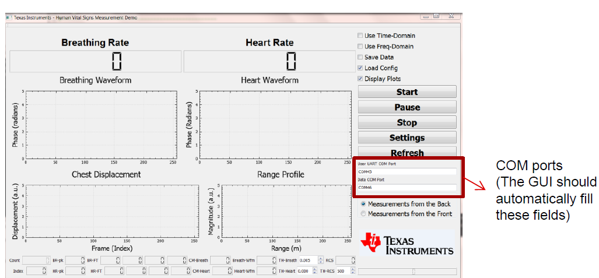
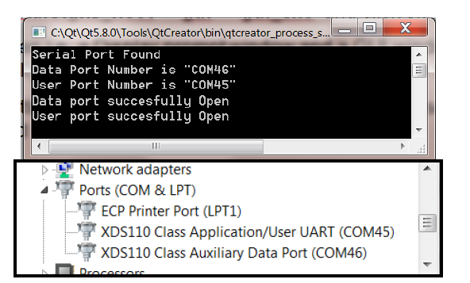
* Press the **Start** Push button in the GUI. In the Display Prompt window you should see the configuration settings being read from the configuration text file and sent through the UART to the EVM
* As soon as the **sensorStart** command is sent, the GUI should start displaying the data
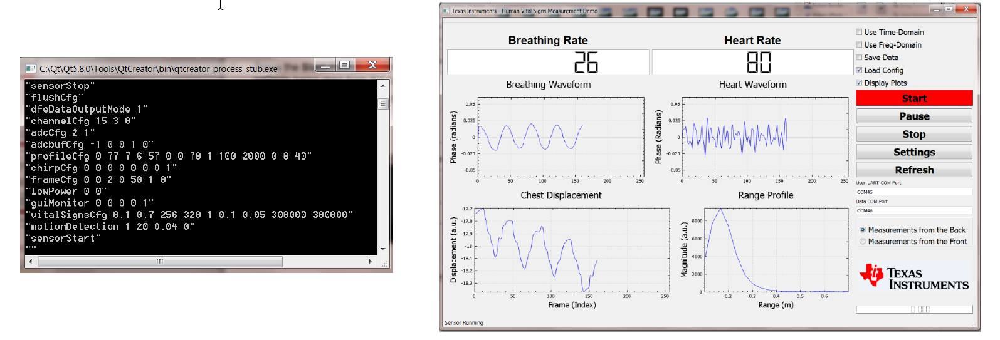
5. Sensor Placement
-----------
* For **Sensor in Front** the EVM shuld be mounted upright while subject should sit facing in a chair about .3-.8m in front.
* For initial measurement subject should stay still for 10-15 seconds to allow the application to calibrate. For subsequent measurements the subject must stay still for 5-10 seconds.
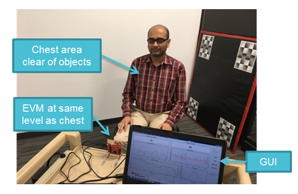
* For **Sensor in Back**, the EVM can be placed in the back of a car seat or in a seat cushion. This can be done by placing the EVM in an enclosure as shown below.
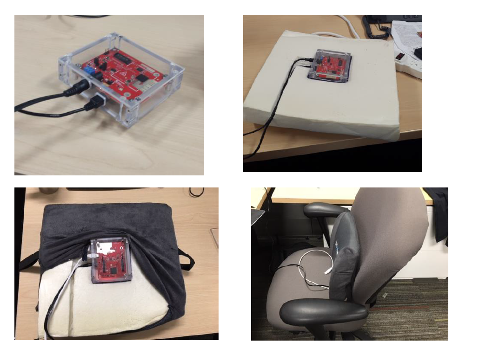
Developer's Guide
===========
Build the Firmware from Source Code
-----------
### 1. Software Requirements
Tool | Version | Required For |Details
----------------------------|---------------------------|---------------|--
mmWave Industrial Toolbox | Latest | - | Contains all files (quickstart, visualizer and firmware source files) related to the lab
TI mmWave SDK | 3.1.1.2 | Firmware Source Code | [Download Link](http://www.ti.com/tool/MMWAVE-SDK)
Code Composer Studio | 8.0+ | Firmware Source Code | [Download link](http://processors.wiki.ti.com/index.php/Download_CCS#Code_Composer_Studio_Version_7_Downloads) Note: CCSv6.x cannot be used
C6000 Code Generation Tool| 7.4.16 | Firmware Source Code | To compile code for the DSP core(C674x), the version 7.4.16 compiler must be installed under C:\ti. [Download link](http://software-dl.ti.com/dsps/forms/self_cert_export.html?prod_no=ti_cgt_c6000_7.4.16_windows_installer.exe&ref_url=http://software-dl.ti.com/codegen/esd/cgt_registered_sw/C6000/7.4.16PC)
To verify proper installations, navigate to **`C:\ti`** and ensure that the following tools have been installed in the *EXACT* directory specified.
Tool | Version | Folder Path | Download link & Details
----------------|-------------|----------------------------------|----------------
CCS | 7.2 or later| `C:\ti\ccsv7` | [Download link](http://processors.wiki.ti.com/index.php/Download_CCS#Code_Composer_Studio_Version_7_Downloads) Note: CCSv6.x cannot be used
TI SYS/BIOS | 6.52.00.12 | `C:\ti\bios_6_52_00_12` | Included in mmwave sdk installer
TI ARM compiler | 16.9.1.LTS | `C:\ti\ti-cgt-arm_16.9.1.LTS` | Included in mmwave sdk installer
TI CGT compiler | 7.4.16 | `C:\ti\c6000_7.4.16` | Version 7.4.16 must be downloaded and installed. [Download link](http://software-dl.ti.com/dsps/forms/self_cert_export.html?prod_no=ti_cgt_c6000_7.4.16_windows_installer.exe&ref_url=http://software-dl.ti.com/codegen/esd/cgt_registered_sw/C6000/7.4.16PC)
XDC | 3.50.00.10 | `C:\ti\xdctools_3_50_00_10_core` | Included in mmwave sdk installer
C64x+ DSPLIB | 3.4.0.0 | `C:\ti\dsplib_c64Px_3_4_0_0` | Included in mmwave sdk installer
C674x DSPLIB | 3.4.0.0 | `C:\ti\dsplib_c674x_3_4_0_0` | Included in mmwave sdk installer
C674x MATHLIB | 3.1.2.1 | `C:\ti\mathlib_c674x_3_1_2_1` | Included in mmwave sdk installer
mmWave device support packages | 1.5.3 or later | - | Upgrade to the latest using CCS update process (see SDK user guide for more details)
TI Emulators package | 6.0.0576.0 or later | - | Upgrade to the latest using CCS update process (see SDK user guide for more details)
### 2. Import Lab Project
For the Vital Signs 68xx Lab, there are two projects, the DSS for the C674x DSP core and the MSS project for the R4F core, that need to be imported to CCS and compiled to generate firmware for the xWR6843.
* Start CCS and setup workspace as desired.
* Import the projects below to CCS using either TI Resource Explorer in CCS or CCS Import Projectspecs method:
* **vital_signs_68xx_dss.projectspec**
* **vital_signs_68xx_mss.projectspec**
[[+d Expand for details on importing via TI Resource Explorer in CCS
* In the top toolbar, navigate to **View > Resource Explorer**
* In the **Resource Explorer** side panel (not the main panel with "Welcome to.."), navigate to **Software > mmWave Sensors > Industrial Toolbox > Labs > Vital Signs - 68xx**
* Under the expanded **Vital Signs - 68xx** folder, there should be two CCS projects, **CCS Project - DSS** and **CCS Project - MSS**.
* For each of the two projects: Click on the project, which should open the project in the right main panel, and then click on the Import to IDE button .
+]]
[[+d Expand for details on importing via CCS Import Projectspecs
* In the top toolbar, navigate to **Project > Import CCS Projects...**
* With the **Select search-directory** option enabled, click **Browse...**, navigate to the **lab0026_vital_signs_68xx** folder at `C:\ti\<mmwave_industrial_toolbox_install_dir>\labs\lab0026_vital_signs_68xx`, and then click **OK**.
* Under **Discovered projects**, select **vital_signs_68xx_dss** and **vital_signs_68xx_mss** (ignore any other projects), then click **Finish**.
+]]
[[g! Successful Import to IDE
After using either method, both project should be visible in **CCS Project Explorer**
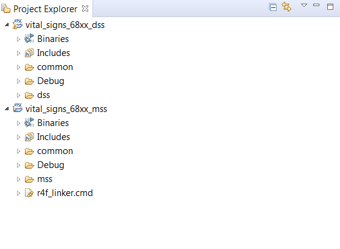
]]
[[b! Project Workspace
When importing projects to a workspace, a copy is created in the workspace. All modifications will only be implemented for the workspace copy. The original project downloaded in mmWave Industrial Toolbox is not touched.
]]
### 3. Build the Lab
#### **Build DSS Project**
The DSS project must be built before the MSS project.
{{y The DSS project must be built using compiler version 7.4.16.
To check the build settings, select **vital_signs_68xx_dss** and right click on the project to select **Show build settings...**.
Under the **General** tab, the **Advanced Settings** section has a drop down menu for **Compiler Version**.
Ensure that it reads **TI v7.4.16**.}}
With the **vital_signs_68xx_dss** project selected in **Project Explorer**, right click on the project and select **Rebuild Project**. Selecting **Rebuild** instead of **Build** ensures that the project is always re-compiled. This is especially important in case the previous build failed with errors.
[[g! Successful DSS Project Build
In the **Project Explorer** panel, navigate to and expand **vital_signs_68xx_dss > Debug** directory. The project has been successfully built if the following files appear in the **Debug** folder:
* vital_signs_68xx_dss.bin
* vital_signs_68xx_dss.xe674
]]
#### **Build MSS Project**
After the DSS project is successfully built, select **vital_signs_68xx_mss** in **Project Explorer**, right click on the project and select **Rebuild Project**.
[[g! Successful MSS Project Build
In the **Project Explorer** panel, navigate to and expand **vital_signs_68xx_mss > Debug** directory. The project has been successfully built if the following files appear in the **Debug** folder:
* vital_signs_68xx_mss.bin
* vital_signs_68xx_mss.xer4f
* vital_signs_demo_68xx_mss.bin
]]
[[r! Build Fails with Errors
If the build fails with errors, please ensure that all the [prerequisites](#software) are installed as mentioned in the mmWave SDK release notes.
]]
### 4. Execute the Lab
There are two ways to execute the compiled code on the EVM:
* Deployment mode: the EVM boots autonomously from flash and starts running the bin image
* Using Uniflash, flash the **vital_signs_demo_68xx_mss.bin** found at `<PROJECT_WORKSPACE_DIR>\vital_signs_68xx_mss\Debug\vital_signs_demo_68xx_mss.bin`
* The same procedure for flashing can be use as detailed in the Quickstart section.
* Debug mode: enables connection with CCS while lab is running; useful during development and debugging
[[+d Expand for help with Debug mode:
The CCS debug firmware (provided with the mmWave SDK) needs to be flashed once on the EVM.
* CCS Debug method is enabled by flashing the CCS Debug Firmware (provided with the mmWave SDK) using the methods covered in the Quickstart section.
* Use the following image instead
Image | Location | Comment
--------------------------|----------------------------|------------------------
Meta Image 1/RadarSS | `C:\ti\mmwave_sdk_<ver>\packages\ti\utils\ccsdebug\xwr68xx_ccsdebug.bin` | Provided with the mmWave SDK
After the CCS debug firmware has been flashed, connect the EVM to CCS
* Create a target configuration (skip to "Open the target..." if config already created previously in another lab for xwr68xx)
* Go to **File > New > New Target Configuration File**
* Specify an appropriate file name (ex: IWR68xx.ccxml) and check "**Use shared location**". Click **Finish**.
* In the configuration editor window:
* Select **Texas Instruments XDS110 USB Debug Probe** for Connection
* Select **IWR6843** device in the Board or Device text box.
* Press the **Save** button to save the target configuration.
* [Optional]: Press the **Test Connection** button to check the connection with the board.
* Open the target configuration window by going to **View > Target Configurations**.
* Under **User Defined** configurations the target configuration previously created should appear.
* Right click on the target configuration and select **Launch Select Configuration**. The target configuration will launch in the **Debug Window**.
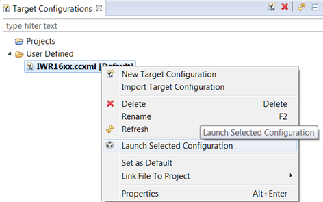
* Group cores and connect
* Select both the **Texas Instruments XDS110 USB Debug probe/C674X_0** and **Texas Instruments XDS110 USB Debug probe/Cortex_R4_0** and then right click and select **Group core(s)**
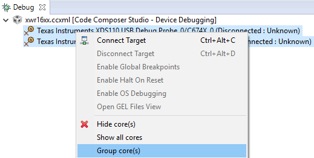
* Select **Group 1** and then right click and select **Connect Target**
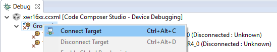
* Load the binary
* Once both targets are connected, click on the C674X_0 target and then click **Load** button in the toolbar. 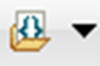
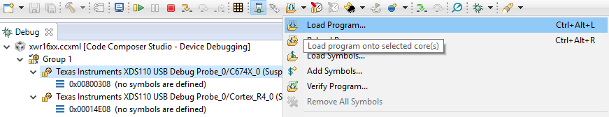
* In the **Load Program** dialog, press the **Browse Project** button .
* Select **vital_signs_demo_68xx_dss.xe674** found at `<PROJECT_WORKSPACE_DIR>\vital_signs_demo_68xx_dss\Debug\vital_signs_demo_68xx_dss.xe674` and press **Ok**.
* Press **Ok** again in the **Load Program** dialog.
* Repeat the above Load the Binary process for the Cortex_R4_0 target, selecting instead **vital_signs_demo_68xx_mss.xer4f** found at `<PROJECT_WORKSPACE_DIR>\vital_signs_demo_68xx_dss\Debug\vital_signs_demo_68xx_dss.xer4f`
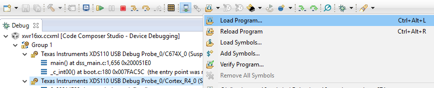
* Run the binary
* Select **Group 1**, press the **Run/Resume** button
* The program should start executing and generate console output.
+]]
To run the lab, launch and configure the visualizer which displays the detection and tracked object data received via UART.
### Launch visualizer
* Navigate to folder `C:\ti\<mmwave_industrial_toolbox_install_dir>\labs\lab0026_vital_signs_68xx\gui\gui_exe`
* Run `VitalSignsRadar_Demo.exe`
* Two windows should open i.e. a Display prompt window and a GUI window. If the EVM is connected to the PC, then the display prompt window should successfully open the COM ports (to double check, make sure they match with the port numbers on the Device Manager).
* In the GUI window, the **User UART COM Port** and **Data COM Port** fields should automatically be filled with the correct port numbers (Make sure that no other EVM is connected to the USB ports of the PC)
* If the GUI does not open you might need the vc runtime which can be [downloaded here](https://support.microsoft.com/en-us/help/2977003/the-latest-supported-visual-c-downloads)
* Press the **Start** Push button in the GUI. In the Display Prompt window you should see the configuration settings being read from the configuration text file and sent through the UART to the EVM
* As soon as the **sensorStart** command is sent, the GUI should start displaying the data
Configuring the GUI
-----------
* The mmWave sensor device and algorithm configurations are set through the configuration text file. These files are located
in `C:\ti\mmwave_industrial_toolbox_<VER>\labs\lab0026_vital_signs_68xx\gui\profiles`
* Configuration commands relevant to the vital signs algorithm are **vitalSignsCfg** and **motionDetection**
* **vitalSignsCfg**
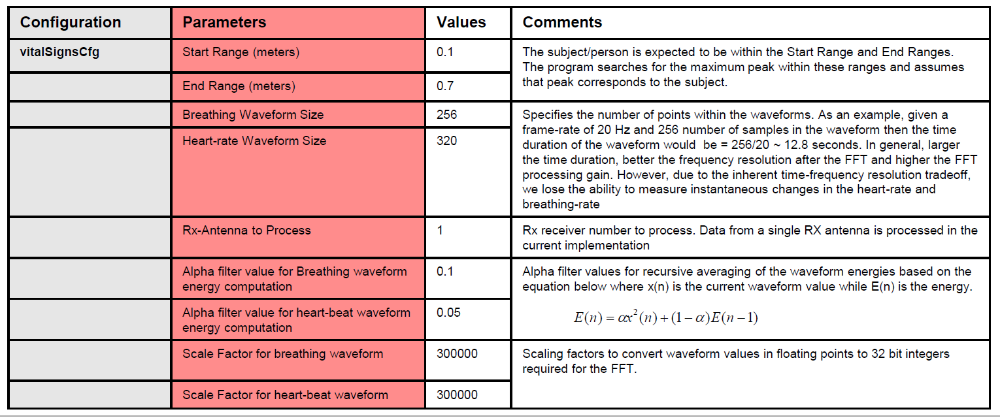
* **motionDetection** The purpose of this block is to discard the data segments that might be corrupted by large amplitude movements. The heart waveform is divided into segment of L samples. If the energy within this data segment exceeds a user-defined threshold ETh then all the samples are discarded from the time-domain heart waveform.
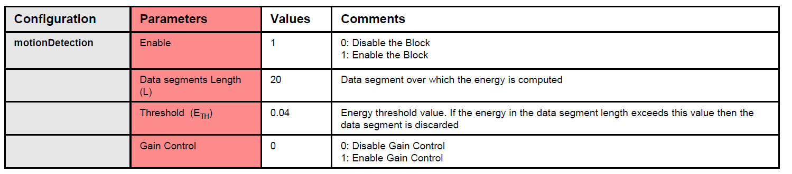
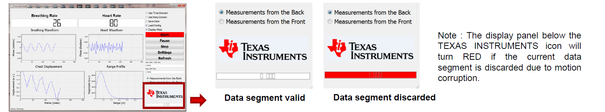
Sensor Placement
-----------
* For **Sensor in Front** the EVM shuld be mounted upright while subject should sit facing in a chair about .3-.8m in front.
* For initial measurement subject should stay still for 10-15 seconds to allow the application to calibrate. For subsequent measurements the subject must stay still for 5-10 seconds.
* For **Sensor in Back**, the EVM can be placed in the back of a car seat or in a seat cushion. This can be done by placing the EVM in an enclosure as shown below.
Visualizer Source Code
-----------
Source files are located at `C:\ti\mmwave_industrial_toolbox_<VER>\labs\lab0026_vital_signs_68xx\gui\gui_source`.
Need More Help?
===========
* Find answers to common questions on <a href="https://e2e.ti.com/support/sensor/mmwave_sensors/w/wiki" target="_blank">mmWave E2E FAQ</a>
* Search for your issue or post a new question on the <a href="https://e2e.ti.com/support/sensor/mmwave_sensors/f/1023" target="_blank">mmWave E2E forum</a>